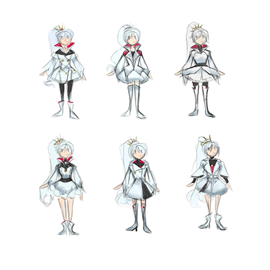

PROJECT RWBY (2022)
| Collection
Project RWBY Banner (2022) | Digital Art
Project RWBY was a passion project that started from a challenge by @andantino_cafe on Instagram to redesign the show RWBY's main cast. Cocoa based a short series on her digital paintings about them including her full process.
- ART PROCESS -
- COLLECTION PIECES -
|
Ruby Rose (2022) | Digital Art |
Weiss Schnee (2022) | Digital Art |
|
Blake Belladonna (2022) | Digital Art |
Yang Xiao Long (2022) | Digital Art |
- SKETCHES -
|  |
Concept sketches for Ruby Rose (Left) and Weiss Schnee (Right)
Sketches for Blake Belladonna (Left) and Yang Xiao Long (Right)